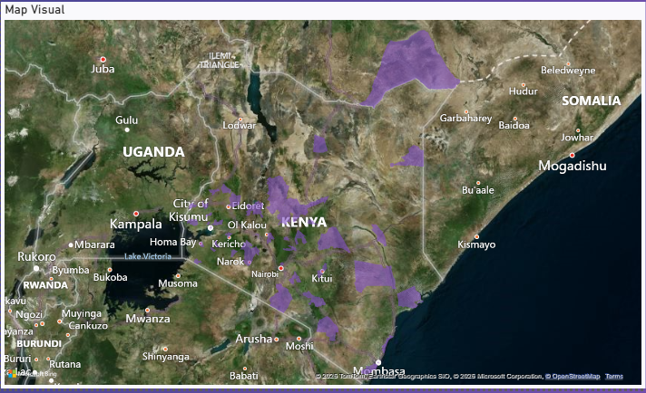
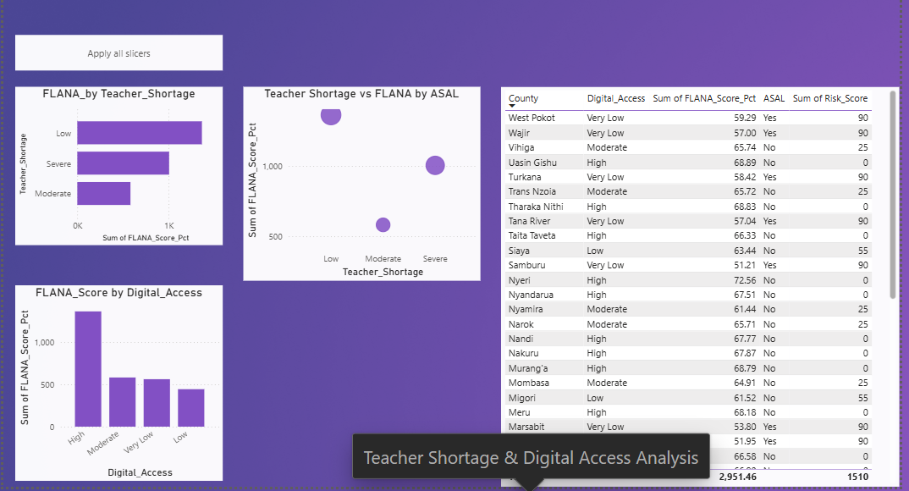
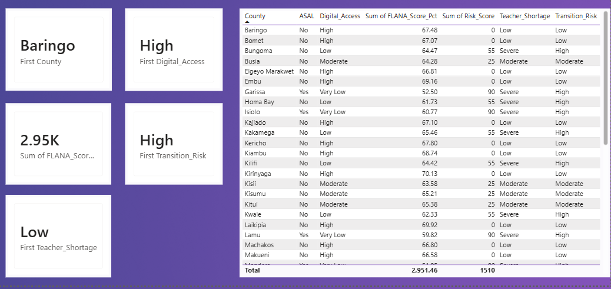
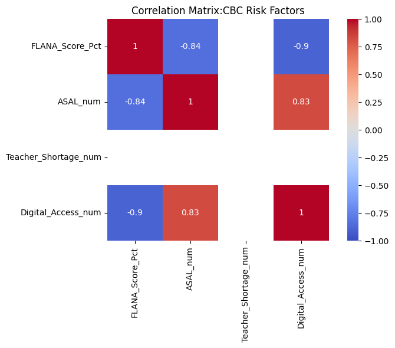
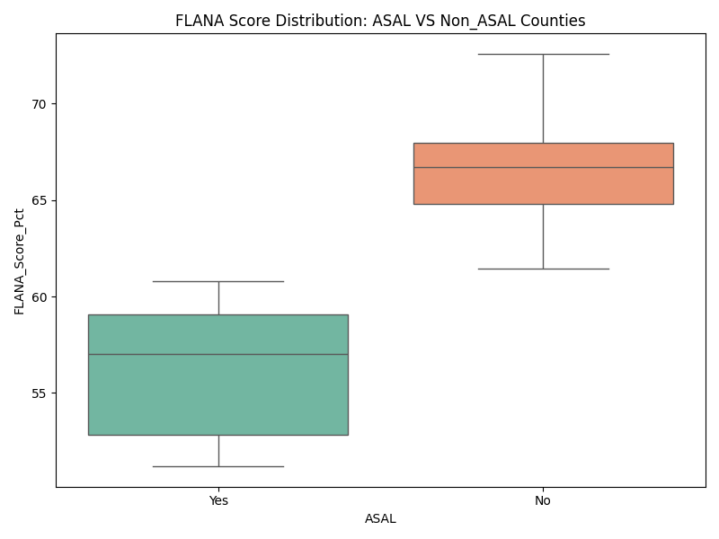
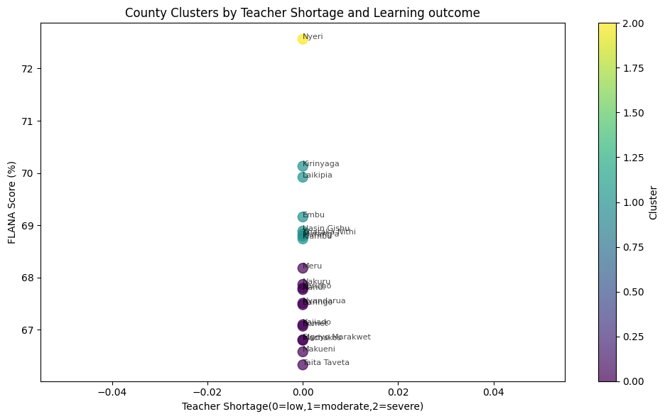
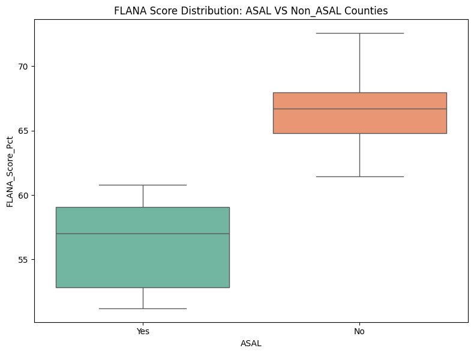
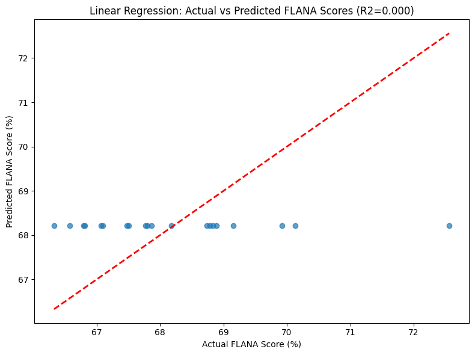

Executive Overview
This education analytics project evaluates CBC implementation readiness across Kenya through infrastructure, staffing, and resource distribution analysis, identifying county-level disparities in preparedness for the Competency-Based Curriculum.
Problem Statement
Kenya's transition to the Competency-Based Curriculum requires adequate infrastructure, teaching capacity and learning resources across all counties. This project assesses how prepared different regions are for CBC implementation and identifies where readiness gaps remain.
Project Objectives
Methodology
Data Preparation
Data collection, validation, cleaning and standardization, including handling missing values and transforming data for analysis.
Exploratory Analysis
Descriptive statistics, county-level comparisons and resource distribution assessment.
Dashboard Development
Interactive Power BI visualizations showing readiness indicators by county and comparative analysis dashboards.
Statistical Analysis
Correlation analysis, readiness scoring, and trend identification using Python in Google Colab.
Technology Stack
Dashboard Preview
Interactive Power BI dashboards mapping CBC readiness, teacher shortages and digital access across Kenyan counties.



Python Analysis Highlights
Statistical analysis and modelling outputs from the Google Colab notebooks behind the readiness scoring.






Key Findings
County Disparities
Readiness (FLANA score) ranges from 51.2% to 72.6% across the 46 counties analysed, averaging 64.2% — a 21-point spread between the most and least prepared counties.
The ASAL Gap
Kenya's 10 ASAL (arid and semi-arid land) counties average a FLANA score of just 56.2%, versus 66.4% for non-ASAL counties — a 10-point readiness gap. FLANA score and overall risk score are strongly correlated (r = -0.90): as readiness drops, risk climbs almost in lockstep.
Teacher Shortages Concentrated in ASAL Counties
All 10 ASAL counties report "Severe" teacher shortages and "Very Low" digital access — a complete overlap. Among the 36 non-ASAL counties, only 7 face severe shortages, and none report very low digital access.
Highest-Risk Counties
Samburu, Mandera, Garissa, Marsabit, Wajir, Tana River, Turkana, West Pokot, Lamu and Isiolo all score the maximum risk rating of 90/100 — and every one of them is an ASAL county. By contrast, Nyeri leads the country in readiness at 72.6%, with a risk score of 0.
Resource Allocation
Of the 46 counties, 17 fall in the "High" risk band and 20 in "Low" risk — but risk is not evenly spread: it is concentrated almost entirely in ASAL regions, pointing to a geographic rather than nationwide resource gap.
Project Outcomes
Strategic Recommendations
1. Prioritize Infrastructure Investment
Prioritize infrastructure investments in low-readiness counties.
2. Increase Teacher Recruitment
Increase teacher recruitment and deployment in underserved regions.
3. Improve Resource Distribution
Improve distribution of CBC learning resources.
4. Establish Monitoring Systems
Establish continuous readiness monitoring systems.
5. Support Equitable Implementation
Use data-driven planning to support equitable implementation.
Project Conclusion
This project demonstrates how education analytics can identify readiness gaps across Kenya's counties, providing county governments and education stakeholders with an evidence-based framework to guide infrastructure investment, teacher deployment and resource distribution for CBC implementation.
Project Resources
This case study demonstrates the application of Power BI, Python and Google Sheets to evaluate CBC transition readiness across Kenyan counties and support evidence-based education planning.